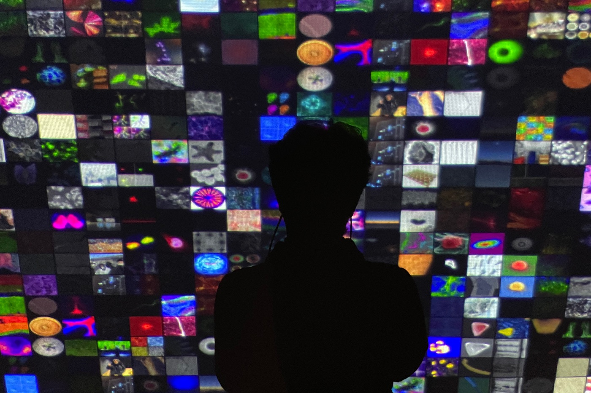

Group Exhibition — 2022
Beyond the Lens
Nano · Bio · Nature
인공지능이 관객과 만나 예술에 관해 대화를 나누는 인터랙티브 미디어 아트, ‘I Question’.
‘I Question’ — an interactive media artwork where an artificial intelligence meets and converses with its audience about art.
‘I Question’은 인공지능이 관객과 만나 대화를 나누는 인터랙티브 미디어 아트입니다. 이 프로젝트는 ‘인간은 AI와 예술에 관해 대화할 수 있는가?’라는 질문에서 출발했습니다. 첫 질문이 던져진 이후, AI는 인간이 여러 질문에 답하는 것을 학습하며 진화해 왔습니다.
AI는 정해진 정답이 없는 질문을 던지며, 예술이 무엇일 수 있는지에 대한 실마리를 건넵니다. 관객은 전시장에 제공된 QR 코드를 통해 대화에 참여하고 자신의 사진을 올릴 수 있으며, 그 사진들은 AI가 감상한 이미지의 시각화로서 작품의 일부가 됩니다. ‘I Question’은 인간과 기계가 함께 공진화할 수 있는가라는 물음을 남깁니다.
‘I Question’ is an interactive media artwork in which an artificial intelligence meets and converses with its audience. The project began from a single question — ‘Can humans converse with AI about art?’ Since that first question, the AI has evolved by learning human answers. It poses questions with no fixed correct answer, offering a sense of what art might be. Audiences join the conversation via a QR code and post their own pictures, which become part of the work as a visualization of the images the AI has appreciated — leaving open the question of whether humans and machines can co-evolve.
- 작품
- Work
- I Question (AI, participatory project, data visualization)
- 함께 보기
- Related
- I Question — Wooran Foundation, 2018
Institute for Basic Science, Seoul — 2022